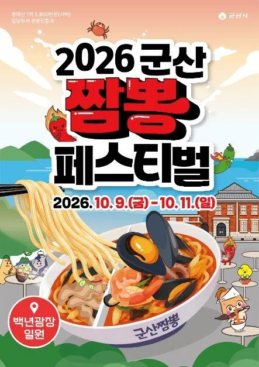
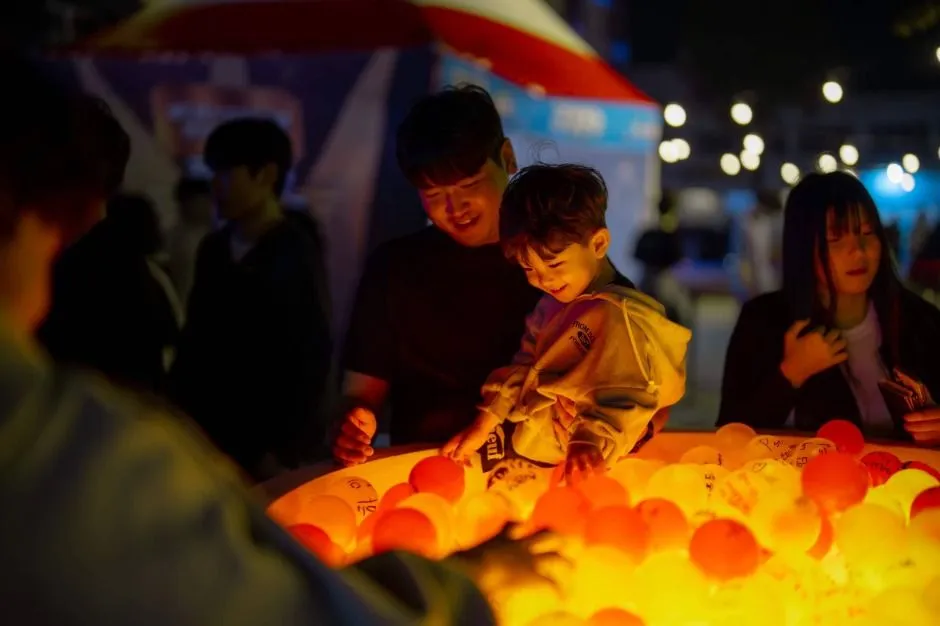
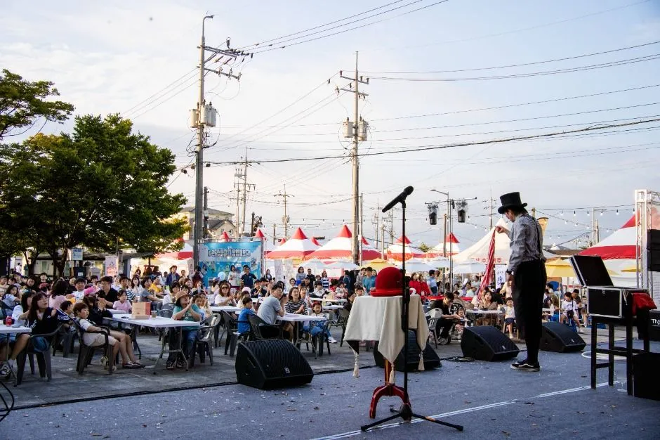
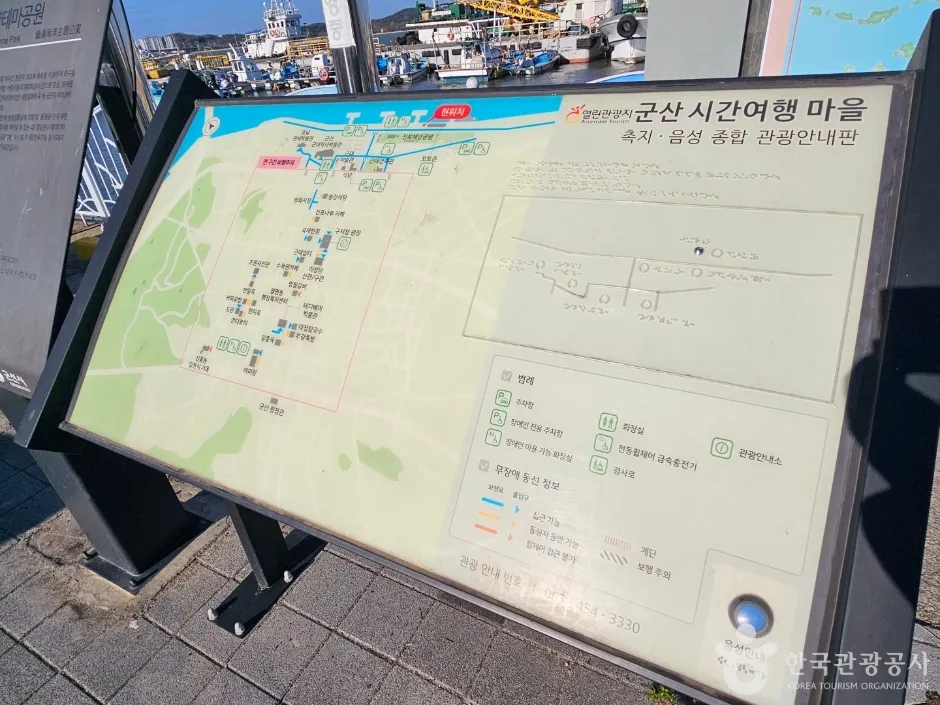
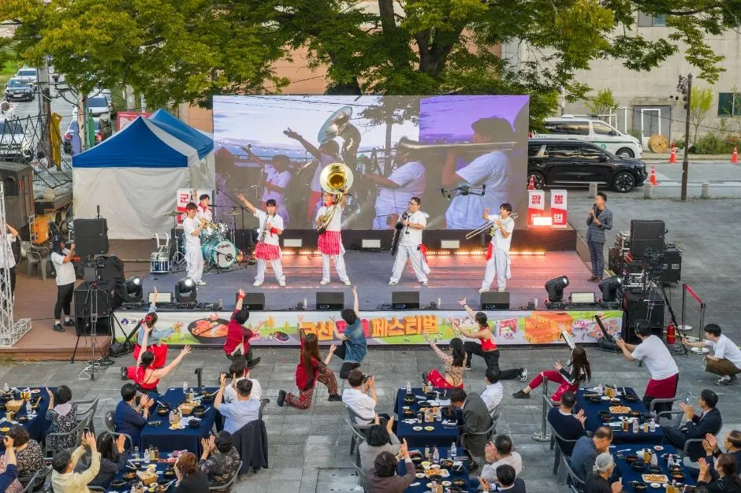
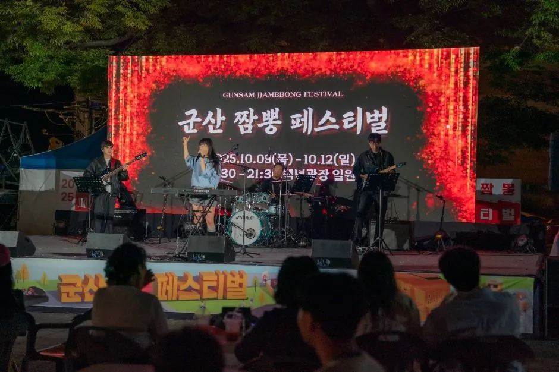
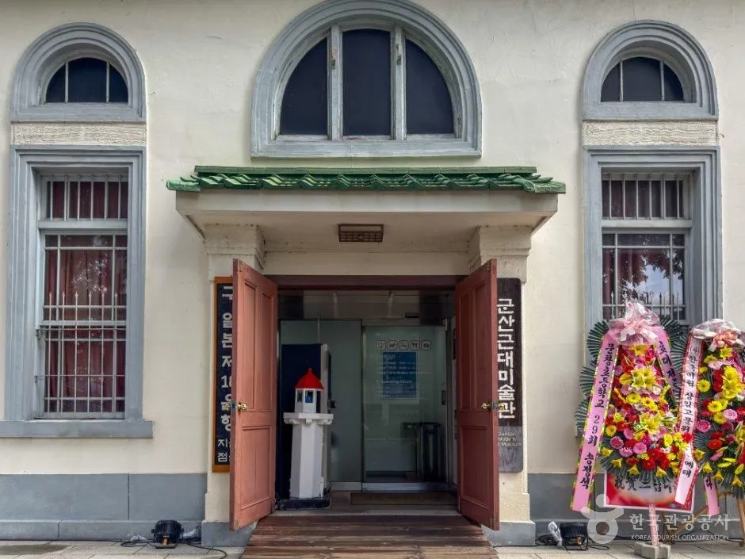
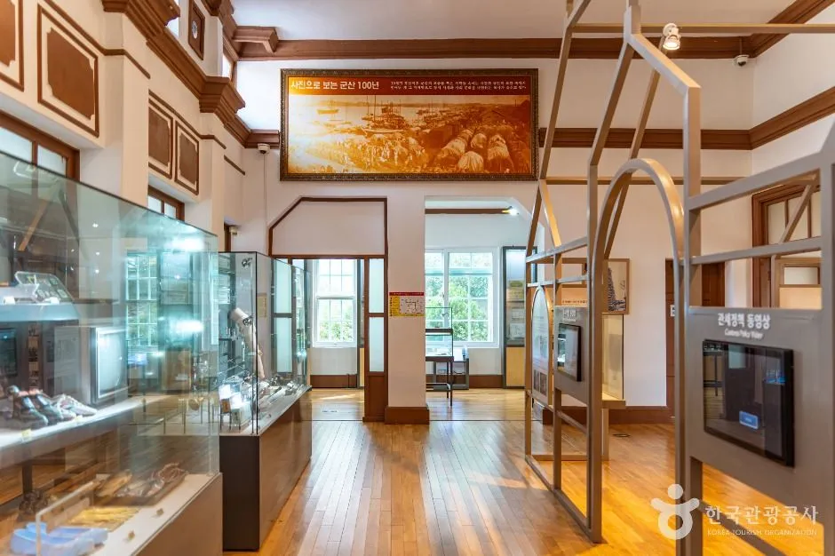
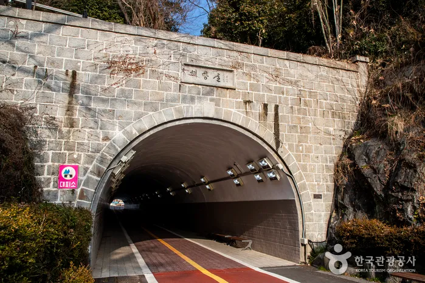
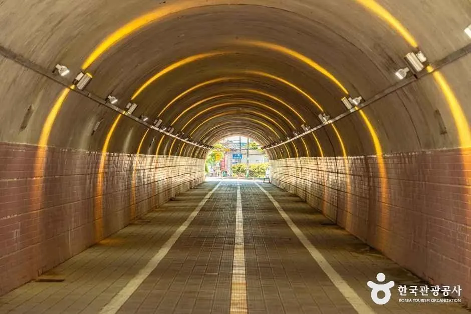

▲ 도로를 따라 부스 천막이 길게 이어지는 군산 짬뽕페스티벌 현장. 촬영 연도는 확인하지 못한 과거 행사 사진이다 사진=한국관광공사
10월 9일은 금요일이자 한글날이다. 군산 짬뽕페스티벌(10월 9~11일)이 하필 한글날 연휴 첫날부터 사흘간 열린다. 행사장은 군산 원도심 장미동 백년광장 일원이고, 짬뽕을 반 그릇씩 파는 부스 20개와 스타 셰프 부스가 들어선다. 문제는 먹는 일보다 그 앞뒤다. 차를 어디에 세울지, 줄은 얼마나 설지에 대해 공식 자료가 거의 말해주지 않는다. 이 글은 군산시 발표를 옮긴 보도와 한국관광공사 행사 정보로 확인된 것만 정리하고, 주차·셔틀·교통통제처럼 확인하지 못한 것은 따로 표시했다. 10월 5일 기준으로 군산시 누리집·군산시 관광 누리집·최근 보도를 다시 확인했지만 임시주차장·셔틀·교통통제 공지는 아직 찾지 못했다. 원도심 주차와 철길마을·은파호수공원 코스는 이미 군산 원도심 주차 동선 가이드에 정리해 두었으므로, 이번에는 짬뽕페스티벌 방문에만 집중한다.
1. 한눈에 보기 — 일정과 기본 정보

▲ 2026 군산 짬뽕페스티벌 포스터. 일정(10.9 금~10.11 일)과 장소(백년광장 일원)가 적혀 있다. 사진=한국관광공사
일정과 장소는 군산시 발표를 옮긴 여러 보도(신아일보 9월 28일, 이투데이 9월 30일 등)와 한국관광공사 행사 정보가 일치한다. 운영 시간은 보도에는 없고 한국관광공사 행사 정보에만 12:00~22:00으로 올라 있다. 작년(2025년)에는 같은 행사가 10월 9~12일 4일간, 11:30~21:30으로 소개됐다(2025년 한국관광공사 정보, 그리고 2025년 무대 사진 속 배너의 일정 표기). 올해는 하루 줄고 시간도 조금 달라졌다. 방문 직전 공지를 한 번 더 보는 것이 좋다.
| 항목 | 내용 | 출처·확인 상태 |
|---|---|---|
| 기간 | 10월 9일(금)~11일(일), 3일간 | 군산시 발표 보도 다수, 공식 포스터 |
| 장소 | 군산시 장미동 백년광장 일원 | 보도·한국관광공사 |
| 운영 시간 | 12:00~22:00 | 한국관광공사 행사 정보(보도에는 미기재) |
| 입장료 | 무료(한국관광공사 정보 기준) | 음식은 부스별 구매 |
| 주최·문의 | 군산시, 063-454-3912·3913 | 한국관광공사 행사 정보 |
| 참여 부스 | 전통 중식당·셰프 협업 등 20개 | 보도 기준 |
| 참여 셰프 | 미카엘, 데이비드 리, 이미영 | 보도 기준, 셰프별 일정은 미확인 |
| 공식 누리집 | jjambbong.kr(한국관광공사 정보 기재), 기존 안내 gyfestival.kr | jjambbong.kr은 열리지만 본문이 동적으로 불러와져 내용 확인 못함, gyfestival.kr은 인증서 오류로 열리지 않음(10/5 기준) |
ℹ️ 주소가 자료마다 다르다
한국관광공사 정보의 행사 주소는 장미동 13-1이고, 일부 자료는 백년광장을 해망로 214로 적는다. 다만 한국관광공사 정보에서 해망로 214는 근대건축관(구 조선은행 군산지점)의 주소이고, 그렇게 적은 자료가 어떤 문서인지는 이번에 확인하지 못했다. 근대건축관은 행사장 좌표에서 직선 약 35m 거리라 어느 쪽으로 가도 같은 구역이다. 내비에는 "백년광장"을 먼저 검색하고 안 잡히면 "군산 근대건축관(해망로 214)"을 넣은 뒤, 현장에서는 천막 행렬과 안내 표지를 따라가는 편이 안전하다.
2. 무엇을 하나 — 프로그램과 참여 방식

▲ 과거 행사의 체험 부스. 올해 어떤 체험이 운영되는지는 사진만으로 단정할 수 없다. 사진=한국관광공사
한국관광공사 행사 정보에 적힌 프로그램은 메인(중식 판매 부스), 부대(먹거리 부스), 소비자 참여(보글보글 소원 짬뽕탕, K-관광섬을 이겨라), 초청 셰프 부스, 공연(밴드·마술 등)이다. 보도는 여기에 저녁 프리미엄 프로그램 '짬뽕레스토랑'(공연과 식사를 결합)과 '철가방 삼형제' 체험을 더한다. 눈에 띄는 점은 모든 중식 판매 부스에서 짬뽕과 짜장면을 0.5인분 단위로 판매한다는 것이다. 여러 집을 돌며 맛보라는 취지다.
| 구분 | 내용 | 비고 |
|---|---|---|
| 중식 부스 | 관내 전통 중식당 등 20개 부스, 고기짬뽕·해물짬뽕·짜장면 | 0.5인분 단위 판매 |
| 스타 셰프 | 미카엘('냉장고를 부탁해'), 데이비드 리·이미영('흑백요리사') | 부스·시간표 미확인 |
| 체험 | 철가방 삼형제, 보글보글 (소원) 짬뽕탕, K-관광섬을 이겨라 | 참가 조건·요금 미확인 |
| 짬뽕레스토랑 | 저녁 프리미엄 프로그램, 공연과 식사 결합 | 예약·가격 미확인 |
| 공연 | 밴드, 마술 등 | 시간표 미확인 |
| 연계 | 짬뽕특화거리·빈해원 등 전통 중식당 안내 | 보도 기준 |

▲ 행사장 무대 앞에는 야외 테이블이 놓이고 공연이 이어진다. 과거 행사 사진이다. 사진=한국관광공사
쿠폰이나 스탬프 같은 별도 참여 제도는 이번 조사에서 확인하지 못했다. 식권제 여부, 결제 방식(현금·카드·모바일), 부스별 가격도 마찬가지다. 가격을 단정할 수 없으니 부스마다 1인분이 아니라 0.5인분 가격이 붙는다는 점만 기억하고, 현장 메뉴판을 확인하자.
행사 개요는 한국관광공사 행사 정보에서도 볼 수 있다. 한국관광공사 행사 정보 바로가기
3. 자차 접근 — 어디에 세우나
가장 중요한 부분이지만 확인된 것이 적다. 10월 5일 기준으로 군산시 누리집, 군산시 관광 누리집, 한국관광공사 정보, 개막을 앞둔 보도(중도일보 10월 4일 등)를 다시 확인했지만 임시주차장, 셔틀버스, 교통통제 구간 공지는 찾지 못했다. 최근 검색에 나오는 군산 교통통제·셔틀 보도는 10월 2~5일 시간여행축제(대학로 일원)의 것이라 이번 행사와 무관하다. 그래서 아래 표는 "확인된 사실"과 "기존에 확인한 원도심 주차 정보"를 구분해 정리했다.
| 항목 | 내용 | 확인 상태 |
|---|---|---|
| 행사 전용 임시주차장 | 안내 없음 | 확인하지 못함 |
| 셔틀버스 | 안내 없음 | 확인하지 못함 |
| 교통통제 | 안내 없음, 부스가 도로변에 늘어서는 만큼 통제 가능성은 있으나 구간은 모름 | 추정, 미확인 |
| 시간여행마을 주차장 | 내항1길 8 일대, 무료로 소개됨 | 타 자료 기준, 공식 요금표 미확인 |
| 진포해양테마공원 주차장 | 내항2길 32 일원, 행사장에서 직선 약 320m | 한국관광공사 정보·좌표 기준 |
| 근대역사박물관 주차장 | 해망로 240, 박물관·미술관 이용 시 주차 가능으로 표기, 행사장에서 직선 약 210m | 한국관광공사 정보·좌표 기준 |

▲ 시간여행마을 관광안내판. 원도심 지도가 그려져 있어 주차 후 도보 동선을 가늠하기 좋다. 사진=한국관광공사
행사장과 시간여행마을 주차장의 거리는 장소별 한국관광공사 좌표(행사장 장미동 13-1, 시간여행마을 내항1길 8)를 10월 5일 직접 재계산하면 직선 약 390m다. 직선거리를 도로·보행로 1.3배로 보고 시속 4km로 걷는다고 가정하면 7~8분 정도로 짐작되지만, 실제 보행로와 신호 대기를 반영한 값은 아니다. 연휴 한가운데 열리는 행사라 무료 주차장이 일찍 찰 가능성이 높다는 것은 어디까지나 추정이다. 공식 혼잡 예측은 찾지 못했다.
✅ 자차 방문 요령(추정 포함)
· 내비는 "백년광장"을 먼저 검색하고 안 잡히면 "군산 근대건축관(해망로 214)"으로 잡는다(주소가 자료마다 달라서). 주차는 시간여행마을이나 진포해양테마공원 쪽을 후보로 두고 걸어간다
· 점심(12시 개장 직후)과 저녁 식사 시간대(18~20시)는 대기가 길 수 있다. 개장 직후 방문이 비교적 한산할 것으로 추정되지만 공식 데이터는 없다
· 주차 후 도보 이동을 전제로 편한 신발을 신는다
· 먼저 군산시 문의(063-454-3912)로 임시주차장·셔틀 운영 여부를 확인한다
· 만차 시 원도심을 헤매지 말고 진포해양테마공원·박물관 주차장으로 넘어가는 순서를 미리 정해 둔다
4. 한글날 연휴 일자별 혼잡 추정
군산시나 주최 측이 낸 혼잡 예측은 찾지 못했다. 아래 표는 요일·공휴일 배치와 지난해 행사 구성을 근거로 한 추정이며, 방문 인원 통계에 기반한 것이 아니다.
| 날짜 | 성격 | 혼잡 추정 | 근거 |
|---|---|---|---|
| 10/9(금, 한글날) | 공휴일·개막일, 12:00 개장 | 점심 직후와 저녁 모두 붐빌 가능성 | 연휴 첫날이라 오전 출발 차량이 몰린다는 일반 패턴(추정) |
| 10/10(토) | 연휴 중간, 주말 | 3일 중 가장 붐빌 가능성 | 주말 낮 시간대 관광객과 지역 주민이 겹친다는 일반 패턴(추정) |
| 10/11(일) | 마지막 날 | 낮에는 붐비고 저녁은 비교적 한산할 가능성 | 귀가 차량이 오후에 빠진다는 일반 패턴(추정), 부스 재료 소진 여부는 모름 |
| 10/12(월) | 행사 종료 | 해당 없음 | 근대역사박물관·미술관·세관 휴관(기존 가이드 기준) |
같은 한글날 연휴에 다른 지역 행사와 비교하고 싶다면 세종한글축제 주차 가이드와 경주 신라문화제 교통통제·주차 정리를 함께 보자. 군산은 개장이 12시라 오전 이동 시간에 여유가 있다는 점이 다르다.
5. 가격과 대기 — 0.5인분이 의미하는 것
가격은 보도에도 한국관광공사 정보에도 없다. 확인한 것은 0.5인분 판매라는 방식뿐이다. 이 방식은 한 집에서 큰 그릇을 먹고 줄을 다시 서는 대신, 여러 집을 순서대로 돌게 만든다. 부스 수가 많으면 줄이 분산될 가능성이 있지만, 스타 셰프 부스는 줄이 몰릴 수 있다는 점은 추정이다. 작년 행사 보도 역시 "한 손에 들어오는 절반 분량"으로 팔렸다고 전한다(YTN, 2025년 10월).
| 항목 | 확인된 내용 | 미확인 |
|---|---|---|
| 판매 단위 | 짬뽕·짜장면 0.5인분 | 정확한 가격 |
| 입장 | 무료(한국관광공사 정보) | 짬뽕레스토랑 요금 |
| 결제 | 안내 없음 | 식권제·현금·카드 여부 |
| 대기 시간 | 공식 정보 없음 | 부스별 대기, 셰프 부스 인원 제한 |
| 취식 공간 | 과거 행사 사진에서 야외 테이블 확인 | 올해 좌석 수 |

▲ 무대 앞 테이블에서 공연을 보며 식사하는 구조다. 과거 행사 사진이다. 사진=한국관광공사
6. 저녁이라면 — 짬뽕레스토랑과 야간 운영
한국관광공사 정보상 운영은 22시까지다. 보도에 따르면 저녁에는 공연과 식사를 결합한 짬뽕레스토랑이 열린다. 예약이 필요한지, 유료인지는 확인하지 못했다. 밤에 자차로 돌아갈 계획이라면 주차장 야간 운영 여부를 점검하자. 시간여행마을 일대는 24시간 무료로 소개됐으나 공식 확인은 하지 못했다.

▲ 2025년 10월 9~12일 행사의 야간 무대. 올해 공연 라인업은 확인하지 못했다. 사진=한국관광공사
7. 먹고 나서 — 인근 코스
축제만 보고 끝내기엔 원도심이 가까이 있다. 근대역사박물관·근대미술관·근대건축관·옛 군산세관은 같은 해망로를 따라 모여 있고, 철길마을과 은파호수공원은 차로 이동하는 코스다. 요금·운영 시간·주차 정보는 군산 원도심 주차 동선 가이드를 보자. 해당 기사에 따르면 근대역사박물관은 3~10월 09:00~18:00이고 월요일 휴관이다. 연휴 다음 날인 10월 12일(월)에는 박물관·미술관·세관이 문을 닫는다.
| 장소 | 주소 | 직선거리 | 이동 시간(추정) |
|---|---|---|---|
| 근대건축관(구 조선은행) | 해망로 214 | 약 35m | 도보 1분 안팎 |
| 빈해원(전통 중식당) | 동령길 57 | 약 90m | 도보 2분 안팎 |
| 군산근대미술관 | 해망로 230 | 약 110m | 도보 2~3분 |
| 군산근대역사박물관 | 해망로 240 | 약 210m | 도보 4분 안팎 |
| 옛 군산세관 | 해망로 244-7 | 약 310m | 도보 6분 안팎 |
| 진포해양테마공원 | 내항2길 32 | 약 320m | 도보 6분 안팎 |
| 시간여행마을 | 내항1길 8 | 약 390m | 도보 7~8분 |
| 해망굴 | 군산창2길 48 | 약 840m | 도보 15분 안팎 |
| 경암동 철길마을 | 경촌4길 14 | 약 2.2km | 차량 7~10분(연휴 정체 미반영) |
| 은파호수공원 | 은파순환길 9 | 약 4.4km | 차량 12~15분(연휴 정체 미반영) |
이동 시간은 직선거리를 도로·보행로 1.3배로 보고 보행 시속 4km, 도심 차량 시속 20~25km로 환산한 추정치이며 신호·정체·주차 대기는 반영하지 않았다. 해망로를 따라 건축관·미술관·박물관·세관이 이어지고 그 끝에서 해망굴로 갈 수 있어 걷기 코스는 이쪽이 가장 짧다. 박물관·미술관·세관 요금과 운영 시간은 앞서 말한 가이드 기사를 따르자.

▲ 군산근대건축관(구 조선은행 군산지점). 해망로 214이며 행사장 좌표에서 직선 약 35m다. 일반 풍경 사진이다. 사진=한국관광공사

▲ 군산근대미술관 입구. 해망로 230으로 행사장에서 직선 약 110m다. 일반 풍경 사진이다. 사진=한국관광공사

▲ 옛 군산세관 내부(한국관광공사 제공 사진). 해망로 244-7로 행사장에서 직선 약 310m이며 월요일은 휴관이다. 사진=한국관광공사

▲ 해망굴 입구. 축제장에서 직선 약 840m 거리다(한국관광공사 좌표 기준). 사진=한국관광공사

▲ 해망굴 내부. 조명이 아치를 따라 이어진다. 통행 여건은 직접 확인하지 못했다. 사진=한국관광공사
해망굴은 한국관광공사가 군산의 명소로 소개하는 터널이다. 이번 조사에서는 개방 시간과 차량 통행 가능 여부를 확인하지 못했다. 철길마을·은파호수공원의 주차 사정은 앞서 말한 가이드 기사에서 이미 다뤘다.
비가 오면
우천 시 행사 운영 방침(취소·시간 조정)과 취식 좌석에 지붕이 있는지는 공식 안내를 확인하지 못했다. 과거 사진을 보면 무대 앞 테이블은 노천이고 부스는 천막이다. 우산·우비를 챙기고, 실내 대안으로는 해망로의 근대건축관·근대미술관·근대역사박물관·옛 군산세관(월요일 휴관)을 후보로 둘 수 있다. 비 오는 날은 차량 이동이 정체로 길어질 수 있으니 여유를 두자. 날씨 예보는 따로 확인하지 않았으므로 출발 전 기상청 예보를 직접 보는 편이 맞다.
8. 전북 가을 나들이 — 함께 묶을 만한 곳
연휴에 전북까지 내려간다면 다른 일정과 묶을 수도 있다. 가을 전북 축제·코스는 전주 비빔밥축제 덕진공원 가이드, 익산 국화축제 가이드, 김제 지평선축제 벽골제 드라이브에 정리했다. 군산에서 바다 쪽으로 이어가려면 새만금 방조제 드라이브 코스도 있다. 다른 축제와 이어갈 때 각 일정이 겹치는지는 해당 기사에서 날짜를 다시 확인하자.
✅ 출발 전 체크리스트
· 10/9(금, 한글날)~10/11(일), 12:00~22:00(한국관광공사 정보)
· 장소: 장미동 백년광장 일원, 내비는 "백년광장"을 먼저 검색하고 안 잡히면 근대건축관(해망로 214), 주차는 시간여행마을·진포해양테마공원 후보
· 임시주차장·셔틀·교통통제·공연 시간표·결제 방식: 10/5 기준 공식 안내 확인하지 못함, 군산시 063-454-3912 문의
· 짬뽕·짜장면 0.5인분 판매, 가격·쿠폰은 미확인
· 12일(월)은 박물관·미술관·세관 휴관
· 우천 시 운영 방침 미확인, 실내 대안은 해망로 박물관·미술관
9. 요약
2026 군산 짬뽕페스티벌은 10월 9~11일(금~일) 장미동 백년광장 일원에서 열리며, 한국관광공사 정보상 운영 시간은 12:00~22:00, 입장은 무료다. 전통 중식당과 셰프 협업 20개 부스에서 짬뽕·짜장면을 0.5인분씩 판매하고, 미카엘·데이비드 리·이미영 셰프가 참여한다.
자차 방문객이 알아야 할 임시주차장·셔틀·교통통제는 공식 자료에서 확인하지 못했다. 직선 약 390m 거리의 시간여행마을 주차장(내항1길 8, 무료로 소개)과 약 320m의 진포해양테마공원 주차장을 후보로 두되 연휴라 일찍 찰 가능성을 염두에 두고, 방문 전 군산시(063-454-3912)에 문의하자. 짬뽕 가격, 쿠폰·식권, 공연·셰프 시간표, 짬뽕레스토랑 예약도 10월 5일 기준 확인하지 못했다.